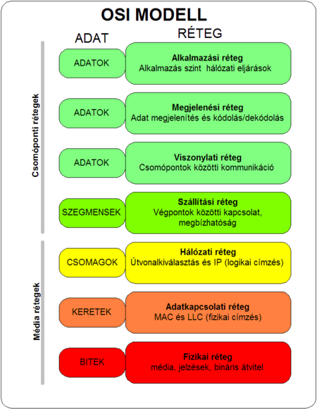

Created szerda 16 június 2021
⇐Home
Az Open Systems Interconnection Reference Model, magyarul a Nyílt rendszerek összekapcsolása referenciamodellje (OSI-modell vagy OSI-referenciamodell) egy rétegekbe szervezett rendszer absztrakt leírása, amely a számítógépek kommunikációjához szükséges hálózati protokollt határozza meg, s amelyet az Open Systems Interconnection javaslatban foglalt össze. A leírást gyakran az OSI hétrétegű modellje néven is emlegetik.
Rétegek

Fizikai réteg - 1.
A fizikai réteg feladata a bitek kommunikációs csatornára való juttatása. Ez a réteg határoz meg minden, az eszközökkel kapcsolatos fizikai és elektromos specifikációt, beleértve az érintkezők kiosztását, a használatos feszültség szinteket és a kábel specifikációkat. A szinten "Hub"-ok, "repeater"-ek és "hálózati adapterek" számítanak a kezelt berendezések közé. A fizikai réteg által megvalósított fő funkciók:
- felépíteni és lezárni egy csatlakozást egy kommunikációs médiummal.
- részt venni egy folyamatban, amelyben a kommunikációs erőforrások több felhasználó közötti hatékony megosztása történik. Például, kapcsolat szétosztás és adatáramlás vezérlés.
- moduláció, vagy a digitális adatok olyan átalakítása, konverziója, jelátalakítása, ami biztosítja, hogy a felhasználó adatait a megfelelő kommunikációs csatorna továbbítani tudja. A jeleket vagy fizikai kábelen – réz vagy optikai szál, például – vagy rádiós kapcsolaton keresztül kell továbbítani.
Adatkapcsolati réteg - 2.
Az adatkapcsolati réteg biztosítja azokat a funkciókat és eljárásokat, amelyek lehetővé teszik az adatok átvitelét két hálózati elem között. Jelzi, illetve lehetőség szerint korrigálja a fizikai szinten történt hibákat is. A használt egyszerű címzési séma fizikai szintű, azaz a használt címek fizikai címek (MAC címek) amelyeket a gyártó fixen állított be hálózati kártya szinten. Megjegyzés: A legismertebb példa itt is az Ethernet. Egyéb példák: ismert adatkapcsolati protokoll a HDLC és az ADCCP a pont-pont vagy csomag-kapcsolt hálózatoknál és az Aloha a helyi hálozatoknál. Az IEEE 802 szerinti helyi hálózatokon, és néhány nem-IEEE 802 hálózatnál, mint például az FDDI, ez a réteg használja a Media Access Control (MAC) réteget és az IEEE 802.2 Logical Link Control (LLC) réteget is.
Ez az a réteg, ahol a bridge-ek és switch-ek működnek.
Hálózati réteg - 3.
A hálózati réteg biztosítja a változó hosszúságú adat sorozatoknak a küldőtől a címzetthez való továbbításához szükséges funkciókat és eljárásokat, úgy, hogy az adatok továbbítása a szolgáltatási minőség függvényében akár egy vagy több hálózaton keresztül is történhet. A hálózati réteg biztosítja a hálózati útvonalválasztást, az adatáramlás ellenőrzést, az adatok szegmentálását/deszegmentálását, és főként a hiba ellenőrzési funkciókat. Az útvonalválasztók (router-ek) ezen a szinten működnek a hálózatban – adatküldés a bővített hálózaton keresztül, és az internet lehetőségeinek kihasználása (itt dolgoznak a 3. réteg (vagy IP) switch-ek). Itt már logikai címzési sémát használ a modell – az értékeket a hálózat karbantartója (hálózati mérnök) adja meg egy hierarchikus szervezésű címzési séma használatával. A legismertebb példa a 3. rétegen az Internet Protocol (IP).
Szállítási réteg - 4.
A szállítási réteg biztosítja, hogy a felhasználók közötti adatátvitel transzparens legyen. A réteg biztosítja, és ellenőrzi egy adott kapcsolat megbízhatóságát. Néhány protokoll kapcsolat orientált. Ez azt jelenti, hogy a réteg nyomonköveti az adatcsomagokat, és hiba esetén gondoskodik a csomag vagy csomagok újraküldéséről. A legismertebb 4. szintű protokoll a TCP.
Viszony réteg - 5.
A viszony réteg a végfelhasználói alkalmazások közötti dialógus menedzselésére alkalmas mechanizmust valósít meg. A megvalósított mechanizmus lehet duplex vagy félduplex, és megvalósítható ellenőrzési pontok kijelölési, késleltetések beállítási, befejezési, illetve újraindítási eljárások.
Megjelenítési réteg - 6.
A megjelenítési réteg biztosítja az alkalmazási réteg számára, hogy az adatok a végfelhasználó rendszerének megfelelő formában álljon rendelkezésre. MIME visszakódolás, adattömörítés, titkosítás, és egyszerűbb adatkezelések történnek ebben a rétegben. Példák: egy EBCDIC-kódolású szöveges fájl ASCII-kódú szövegfájllá konvertálása, vagy objektum és más adatstruktúra sorossá alakítása és XML formába alakítása vagy ebből a formából visszaalakítása valamilyen soros formába.
feladata:
- két számítógép között logikai kapcsolat létesítése
- párbeszéd szervezése
- vezérjelkezelés
- szinkronizálás
Alkalmazási réteg - 7.
Az alkalmazási réteg szolgáltatásai támogatják a szoftver alkalmazások közötti kommunikációt, és az alsóbb szintű hálózati szolgáltatások képesek értelmezni alkalmazásoktól jövő igényeket, illetve, az alkalmazások képesek a hálózaton küldött adatok igényenkénti értelmezésére. Az alkalmazási réteg protokolljain keresztül az alkalmazások képesek egyeztetni formátumról, további eljárásról, biztonsági, szinkronizálási vagy egyéb hálózati igényekről. A legismertebb alkalmazási réteg szintű protokollok a HTTP, az SMTP, az FTP és a Telnet.
{kind=link}